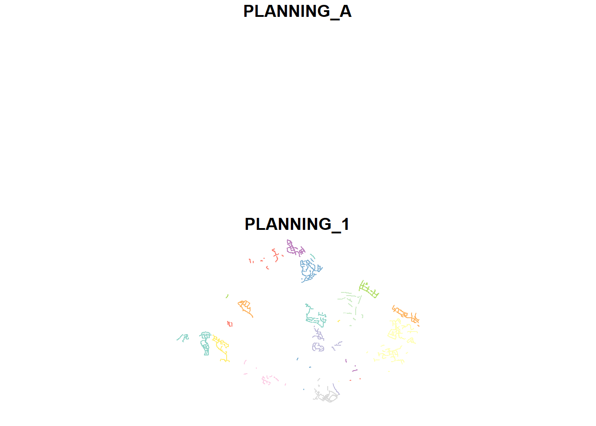

pacman::p_load(sf, tmap, tidyverse)Hands-on Exercise 1
Getting Started
Install and launch R Packages
import the data
mpsz <- st_read(dsn = "D:/EEEcy/ISSS626-GAA/Hands-on_Ex/Hands-on_Ex01/data/geospatial",
layer = "MP14_SUBZONE_WEB_PL")Reading layer `MP14_SUBZONE_WEB_PL' from data source
`D:\EEEcy\ISSS626-GAA\Hands-on_Ex\Hands-on_Ex01\data\geospatial'
using driver `ESRI Shapefile'
Simple feature collection with 323 features and 15 fields
Geometry type: MULTIPOLYGON
Dimension: XY
Bounding box: xmin: 2667.538 ymin: 15748.72 xmax: 56396.44 ymax: 50256.33
Projected CRS: SVY21Importing polyline feature data in shapefile form
mpsz <- st_read(dsn = "D:/EEEcy/ISSS626-GAA/Hands-on_Ex/Hands-on_Ex01/data/geospatial",
layer = "CyclingPathGazette")Reading layer `CyclingPathGazette' from data source
`D:\EEEcy\ISSS626-GAA\Hands-on_Ex\Hands-on_Ex01\data\geospatial'
using driver `ESRI Shapefile'
Simple feature collection with 3138 features and 2 fields
Geometry type: MULTILINESTRING
Dimension: XY
Bounding box: xmin: 11854.32 ymin: 28347.98 xmax: 42644.17 ymax: 48948.15
Projected CRS: SVY21Importing GIS data in kml format
preschool = st_read("D:/EEEcy/ISSS626-GAA/Hands-on_Ex/Hands-on_Ex01/data/geospatial/PreSchoolsLocation.kml")Reading layer `PRESCHOOLS_LOCATION' from data source
`D:\EEEcy\ISSS626-GAA\Hands-on_Ex\Hands-on_Ex01\data\geospatial\PreSchoolsLocation.kml'
using driver `KML'
Simple feature collection with 2290 features and 2 fields
Geometry type: POINT
Dimension: XYZ
Bounding box: xmin: 103.6878 ymin: 1.247759 xmax: 103.9897 ymax: 1.462134
z_range: zmin: 0 zmax: 0
Geodetic CRS: WGS 84Working with st_geometry()
st_geometry(mpsz)Geometry set for 3138 features
Geometry type: MULTILINESTRING
Dimension: XY
Bounding box: xmin: 11854.32 ymin: 28347.98 xmax: 42644.17 ymax: 48948.15
Projected CRS: SVY21
First 5 geometries:MULTILINESTRING ((40128.23 37076.74, 40130.44 3...MULTILINESTRING ((35123.93 42970.72, 35121.12 4...MULTILINESTRING ((35088.86 42820.93, 35089.18 4...MULTILINESTRING ((35099.12 42871.11, 35097.69 4...MULTILINESTRING ((16031.65 36921.59, 16035.79 3...Working with st_geometry()
glimpse(mpsz)Rows: 3,138
Columns: 3
$ PLANNING_A <chr> NA, NA, NA, NA, NA, NA, NA, NA, NA, NA, NA, NA, NA, NA, NA,…
$ PLANNING_1 <chr> "TAMPINES", "PUNGGOL", "PUNGGOL", "PUNGGOL", "JURONG WEST",…
$ geometry <MULTILINESTRING [m]> MULTILINESTRING ((40128.23 ..., MULTILINEST…Working with head()
head(mpsz, n=5) Simple feature collection with 5 features and 2 fields
Geometry type: MULTILINESTRING
Dimension: XY
Bounding box: xmin: 16031.65 ymin: 36921.59 xmax: 40146.92 ymax: 42970.72
Projected CRS: SVY21
PLANNING_A PLANNING_1 geometry
1 <NA> TAMPINES MULTILINESTRING ((40128.23 ...
2 <NA> PUNGGOL MULTILINESTRING ((35123.93 ...
3 <NA> PUNGGOL MULTILINESTRING ((35088.86 ...
4 <NA> PUNGGOL MULTILINESTRING ((35099.12 ...
5 <NA> JURONG WEST MULTILINESTRING ((16031.65 ...Plotting the Geospatial Data
plot(mpsz) 
Working with Projection
st_crs(mpsz) Coordinate Reference System:
User input: SVY21
wkt:
PROJCRS["SVY21",
BASEGEOGCRS["WGS 84",
DATUM["World Geodetic System 1984",
ELLIPSOID["WGS 84",6378137,298.257223563,
LENGTHUNIT["metre",1]],
ID["EPSG",6326]],
PRIMEM["Greenwich",0,
ANGLEUNIT["Degree",0.0174532925199433]]],
CONVERSION["unnamed",
METHOD["Transverse Mercator",
ID["EPSG",9807]],
PARAMETER["Latitude of natural origin",1.36666666666667,
ANGLEUNIT["Degree",0.0174532925199433],
ID["EPSG",8801]],
PARAMETER["Longitude of natural origin",103.833333333333,
ANGLEUNIT["Degree",0.0174532925199433],
ID["EPSG",8802]],
PARAMETER["Scale factor at natural origin",1,
SCALEUNIT["unity",1],
ID["EPSG",8805]],
PARAMETER["False easting",28001.642,
LENGTHUNIT["metre",1],
ID["EPSG",8806]],
PARAMETER["False northing",38744.572,
LENGTHUNIT["metre",1],
ID["EPSG",8807]]],
CS[Cartesian,2],
AXIS["(E)",east,
ORDER[1],
LENGTHUNIT["metre",1,
ID["EPSG",9001]]],
AXIS["(N)",north,
ORDER[2],
LENGTHUNIT["metre",1,
ID["EPSG",9001]]]]mpsz3414 <- st_set_crs(mpsz, 3414)Warning: st_crs<- : replacing crs does not reproject data; use st_transform for
thatst_crs(mpsz3414)Coordinate Reference System:
User input: EPSG:3414
wkt:
PROJCRS["SVY21 / Singapore TM",
BASEGEOGCRS["SVY21",
DATUM["SVY21",
ELLIPSOID["WGS 84",6378137,298.257223563,
LENGTHUNIT["metre",1]]],
PRIMEM["Greenwich",0,
ANGLEUNIT["degree",0.0174532925199433]],
ID["EPSG",4757]],
CONVERSION["Singapore Transverse Mercator",
METHOD["Transverse Mercator",
ID["EPSG",9807]],
PARAMETER["Latitude of natural origin",1.36666666666667,
ANGLEUNIT["degree",0.0174532925199433],
ID["EPSG",8801]],
PARAMETER["Longitude of natural origin",103.833333333333,
ANGLEUNIT["degree",0.0174532925199433],
ID["EPSG",8802]],
PARAMETER["Scale factor at natural origin",1,
SCALEUNIT["unity",1],
ID["EPSG",8805]],
PARAMETER["False easting",28001.642,
LENGTHUNIT["metre",1],
ID["EPSG",8806]],
PARAMETER["False northing",38744.572,
LENGTHUNIT["metre",1],
ID["EPSG",8807]]],
CS[Cartesian,2],
AXIS["northing (N)",north,
ORDER[1],
LENGTHUNIT["metre",1]],
AXIS["easting (E)",east,
ORDER[2],
LENGTHUNIT["metre",1]],
USAGE[
SCOPE["Cadastre, engineering survey, topographic mapping."],
AREA["Singapore - onshore and offshore."],
BBOX[1.13,103.59,1.47,104.07]],
ID["EPSG",3414]]preschool3414 <- st_transform(preschool,
crs = 3414) Importing the aspatial data
listings <- read_csv("Hands-on_Ex01/data/aspatial/listings.csv")Rows: 3540 Columns: 18
── Column specification ────────────────────────────────────────────────────────
Delimiter: ","
chr (6): name, host_name, neighbourhood_group, neighbourhood, room_type, l...
dbl (11): id, host_id, latitude, longitude, price, minimum_nights, number_o...
date (1): last_review
ℹ Use `spec()` to retrieve the full column specification for this data.
ℹ Specify the column types or set `show_col_types = FALSE` to quiet this message.list(listings) [[1]]
# A tibble: 3,540 × 18
id name host_id host_name neighbourhood_group neighbourhood latitude
<dbl> <chr> <dbl> <chr> <chr> <chr> <dbl>
1 71609 Ensuite … 367042 Belinda East Region Tampines 1.35
2 71896 B&B Roo… 367042 Belinda East Region Tampines 1.35
3 71903 Room 2-n… 367042 Belinda East Region Tampines 1.35
4 275343 10min wa… 1439258 Kay Central Region Bukit Merah 1.29
5 275344 15 mins … 1439258 Kay Central Region Bukit Merah 1.29
6 289234 Booking … 367042 Belinda East Region Tampines 1.34
7 294281 5 mins w… 1521514 Elizabeth Central Region Newton 1.31
8 324945 Comforta… 1439258 Kay Central Region Bukit Merah 1.29
9 330095 Relaxing… 1439258 Kay Central Region Bukit Merah 1.29
10 344803 Budget s… 367042 Belinda East Region Tampines 1.35
# ℹ 3,530 more rows
# ℹ 11 more variables: longitude <dbl>, room_type <chr>, price <dbl>,
# minimum_nights <dbl>, number_of_reviews <dbl>, last_review <date>,
# reviews_per_month <dbl>, calculated_host_listings_count <dbl>,
# availability_365 <dbl>, number_of_reviews_ltm <dbl>, license <chr>Creating a simple feature data frame from an aspatial data frame
listings_sf <- st_as_sf(listings,
coords = c("longitude", "latitude"),
crs=4326) %>%
st_transform(crs = 3414)glimpse(listings_sf)Rows: 3,540
Columns: 17
$ id <dbl> 71609, 71896, 71903, 275343, 275344, 28…
$ name <chr> "Ensuite Room (Room 1 & 2) near EXPO", …
$ host_id <dbl> 367042, 367042, 367042, 1439258, 143925…
$ host_name <chr> "Belinda", "Belinda", "Belinda", "Kay",…
$ neighbourhood_group <chr> "East Region", "East Region", "East Reg…
$ neighbourhood <chr> "Tampines", "Tampines", "Tampines", "Bu…
$ room_type <chr> "Private room", "Private room", "Privat…
$ price <dbl> NA, 80, 80, 50, 50, NA, 85, 65, 45, 54,…
$ minimum_nights <dbl> 92, 92, 92, 180, 180, 92, 92, 180, 180,…
$ number_of_reviews <dbl> 19, 24, 46, 20, 16, 12, 131, 17, 5, 60,…
$ last_review <date> 2020-01-17, 2019-10-13, 2020-01-09, 20…
$ reviews_per_month <dbl> 0.12, 0.15, 0.29, 0.15, 0.11, 0.08, 0.8…
$ calculated_host_listings_count <dbl> 6, 6, 6, 49, 49, 6, 7, 49, 49, 6, 7, 7,…
$ availability_365 <dbl> 89, 148, 90, 62, 0, 88, 365, 0, 0, 365,…
$ number_of_reviews_ltm <dbl> 0, 0, 0, 0, 2, 0, 0, 1, 1, 1, 0, 0, 0, …
$ license <chr> NA, NA, NA, "S0399", "S0399", NA, NA, "…
$ geometry <POINT [m]> POINT (41972.5 36390.05), POINT (…The scenario:
A pre-school service group want to find out the numbers of pre-schools in each Planning Subzone.
mpsz3414$`PreSch Count`<- lengths(st_intersects(mpsz3414, preschool3414))
summary(mpsz3414$`PreSch Count`) Min. 1st Qu. Median Mean 3rd Qu. Max.
0 0 0 0 0 0 top_n(mpsz3414, 1, `PreSch Count`)Simple feature collection with 3138 features and 3 fields
Geometry type: MULTILINESTRING
Dimension: XY
Bounding box: xmin: 11854.32 ymin: 28347.98 xmax: 42644.17 ymax: 48948.15
Projected CRS: SVY21 / Singapore TM
First 10 features:
PLANNING_A PLANNING_1 geometry PreSch Count
1 <NA> TAMPINES MULTILINESTRING ((40128.23 ... 0
2 <NA> PUNGGOL MULTILINESTRING ((35123.93 ... 0
3 <NA> PUNGGOL MULTILINESTRING ((35088.86 ... 0
4 <NA> PUNGGOL MULTILINESTRING ((35099.12 ... 0
5 <NA> JURONG WEST MULTILINESTRING ((16031.65 ... 0
6 <NA> JURONG WEST MULTILINESTRING ((15538.04 ... 0
7 <NA> JURONG WEST MULTILINESTRING ((15372.63 ... 0
8 <NA> JURONG WEST MULTILINESTRING ((16074.89 ... 0
9 <NA> JURONG WEST MULTILINESTRING ((16073.91 ... 0
10 <NA> JURONG WEST MULTILINESTRING ((15404.49 ... 0mpsz3414$Area <- mpsz3414 %>%
st_area()mpsz3414 <- mpsz3414 %>%
mutate(`PreSch Density` = `PreSch Count`/Area * 1000000)